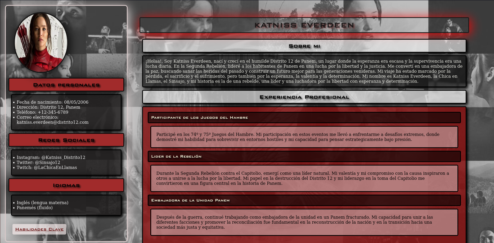
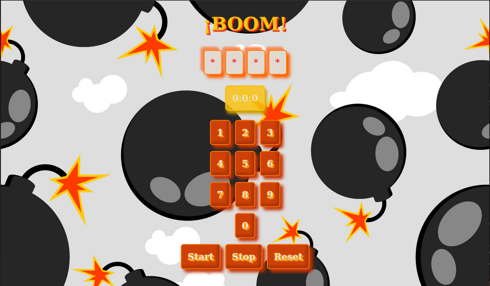
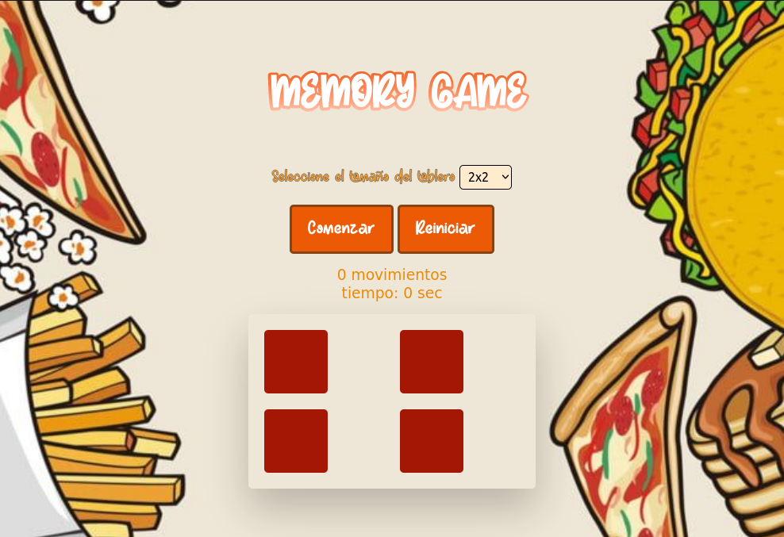

Práctica 1: CV
Desarrollar un CV utilizando HTML Y CSS sobre un personaje que te guste. En mi caso elegi a Kattniss Everdeen, protagonista de los Juegos del Hambre.
ver la prácticaPráctica 2: ¡BOOM!
Desarrollar un juego de adivinar la contraseña correcta, aleatoriamente generada
ver la prácticaPráctica 3: Tiro Parabolico

Desarrollar un juego de tiro en el que se lanza un proyectil con el que tenemos que tratar de alcanzar el objetivo
ver la prácticaPráctica 4: Memory
Desarrollar un juego de memoria en el que tenemos que tratar de encontrar las parejas generadas aleatoriamente y que se encuentra debajo de cada carta
ver la prácticaPráctica 5:
Senserit mediocrem vis ex, et dicunt deleniti gubergren mei. Mel id clita mollis repudiare. Sed ad nostro delicatissimi, postea pertinax est an. Adhuc sensibus percipitur sed te, eirmod tritani debitis nec ea. Cu vis quis gubergren.
Senserit mediocrem vis ex, et dicunt deleniti gubergren mei. Mel id clita mollis repudiare. Sed ad nostro delicatissimi, postea pertinax est an. Adhuc sensibus percipitur sed te, eirmod tritani debitis nec ea. Cu vis quis gubergren.
ver la práctica